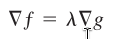
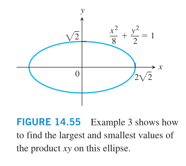
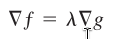
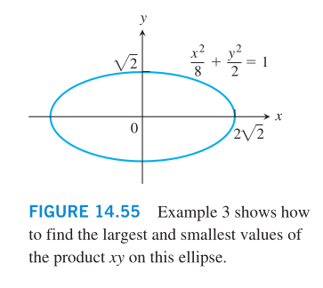

Home
Lagrange Multipliers
Sometimes we need to find the extreme values of a function
whose domain is constrained to lie within some particular subset
of the plane.
Example: we want to find the points on the hyperbolic cylinder
xˆ2 ‐ zˆ2 ‐ 1 = 0 that are cloest to the origin.
 That is, we want to minimize f(x,y,z) = xˆ2 + yˆ2 + zˆ2
We can treat x, y as the independent variables, or better, treat
y, z as the independent variables. Then by the First Derivative
Test, find x, y and z.
Another solution:
That is, we want to minimize f(x,y,z) = xˆ2 + yˆ2 + zˆ2
We can treat x, y as the independent variables, or better, treat
y, z as the independent variables. Then by the First Derivative
Test, find x, y and z.
Another solution:
 At each point of contact, the cylinder and sphere have the same
tangent plane and normal line.
Then we have f(x,y,z)=xˆ2+yˆ2+zˆ2 ‐ aˆ2 = 0 and
g(x,y,z) = xˆ2 ‐ zˆ2 ‐ 1 = 0
At any point of contact, the gradients f and g will be parallel:
No point on the surface has a zero x‐coordinate to conclude that
x != 0.
To satisfy this, z = 0, y = 0, λ=1, x=+‐1
This is the method of Lagrange multipliers. The method says that
the local extreme values of a function f(x,y,z) whose variables
are subject to a constraint g(x,y,z)=0 are to be found on the
surface g = 0 among the points where

Another Example:
‐2‐

At each point of contact, the cylinder and sphere have the same
tangent plane and normal line.
Then we have f(x,y,z)=xˆ2+yˆ2+zˆ2 ‐ aˆ2 = 0 and
g(x,y,z) = xˆ2 ‐ zˆ2 ‐ 1 = 0
At any point of contact, the gradients f and g will be parallel:
No point on the surface has a zero x‐coordinate to conclude that
x != 0.
To satisfy this, z = 0, y = 0, λ=1, x=+‐1
This is the method of Lagrange multipliers. The method says that
the local extreme values of a function f(x,y,z) whose variables
are subject to a constraint g(x,y,z)=0 are to be found on the
surface g = 0 among the points where

Another Example:
‐2‐
